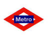
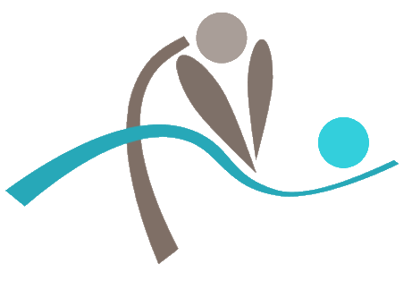

ALGUNOS DE NUESTROS PACIENTES


Cita previa: 91 501 95 68 o 664 23 93 45
NOVAFIS FISIOTERAPIA es un centro creado en 2006, tras más de 6 años de experiencia en el sector sanitario privado.
Nuestro objetivo es la recuperación funcional de las dolencias, tanto de las más cotidianas como de las derivadas de cualquier proceso traumático, deportivo o postoperatorio, a través de la aplicación de múltiples técnicas indicadas para ello, de forma ÉTICA, PROFESIONAL e INDIVIDUALIZADA.
Nuestro pilar de trabajo es la terapia manual (Masoterapia), complementada con diversas herramientas de trabajo adquiridas a través de la formación continua a lo largo de los años de experiencia en la profesión.
| FISIOTERAPIA | OSTEOPATÍA |
| Masoterapia | ELECTROTERAPIA |
| Fibrolisis Instrumental | Ultrasonido - Láser - Microondas |
| Acupuntura | Tecarterapia - Corrientes Terapéuticas |
| Vendaje neuromuscular | PILATES SUELO |
| Vendaje funcional | TRX (Entrenamiento en suspensión) |
| PSICOTERAPIA |
| Precios | |
| Fisioterapia | 30 €/sesión |
| Osteopatía | 50 €/sesión |
| Electroterapia | 20 €/sesión |
| Tecarterpia | 50 €/sesión |
| Pilates y TRX | 50 €/mes |
| Psicoterapia | Primera consulta gratuita Resto, consultar precio |
De Lunes a Viernes 9:45 - 13:30 y 15:45 - 20:00. Cerramos los Miércoles por la mañana.
Previa petición de hora: 91 501 95 68 - 664 23 93 45
Gozamos de una ubicación privilegiada, cercana al Puente de Vallecas y a su Centro de Salud. Con accesos cómodos tanto desde la M30, A3, como desde el centro de la ciudad a través de la Avenida Ciudad de Barcelona.
Calle Emilio Ortuño, 6 - Local
28038 Madrid
Teléfonos: 91 501 95 68 - 664 23 93 45
e-mail: novafis@hotmail.com
| Transporte público | ||
|---|---|---|
|  | Puente de Vallecas (salida Peña Prieta) | |
| Líneas 8 - 10 - 24 - 37 - 54 - 56 - 57 - 58 - 111 - 113 - 136 - 141 - 148 - 310 | ||
|  |
José Antonio Jiménez Domínguez COLEGIADO 1291 por el Ilustre Colegio de Fisioterapeutas de la Comunidad de Madrid Diplomado en Fisioterapia por la Universidad Complutense de Madrid (1996-1999) Fisioterapeuta colaborador de la Real Federación Española de Atletismo (2006-2008) |
|
Javier Soler González COLEGIADO 3344 por el Ilustre Colegio de Fisioterapeutas de la Comunidad de Madrid Diplomado por la Universidad Europea de Madrid (1998-2001) Master en Osteopatía estructural por Gecosalud Fisioterapeuta de la Selección Madrileña de Fútbol Sala (2007-2009) |
|